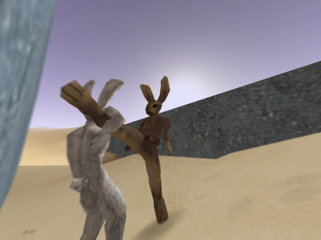
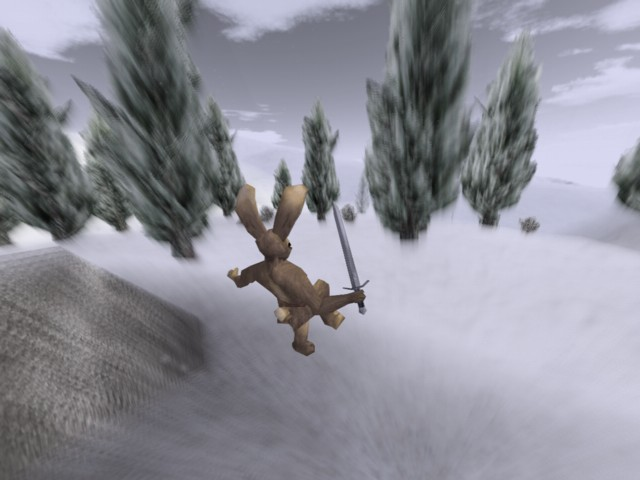

I found a cool little shareware game for Mac, PC and Linux called Lugaru. You play a rabbit (yes, I laughed at first) that does martial arts. The graphics aren't bad for a shareware, the story is nothing special and perhaps a little short, but the gameplay is fun and addictive. It has a unique fighting style and a good physics engine. Download the demo! It's rather fun! And once you forget that you're playing a rabbit it can be quite a serious game, good fun though!
Piccies:

Piccies:



 <3<3<3<3<3<#<#
<3<3<3<3<3<#<#